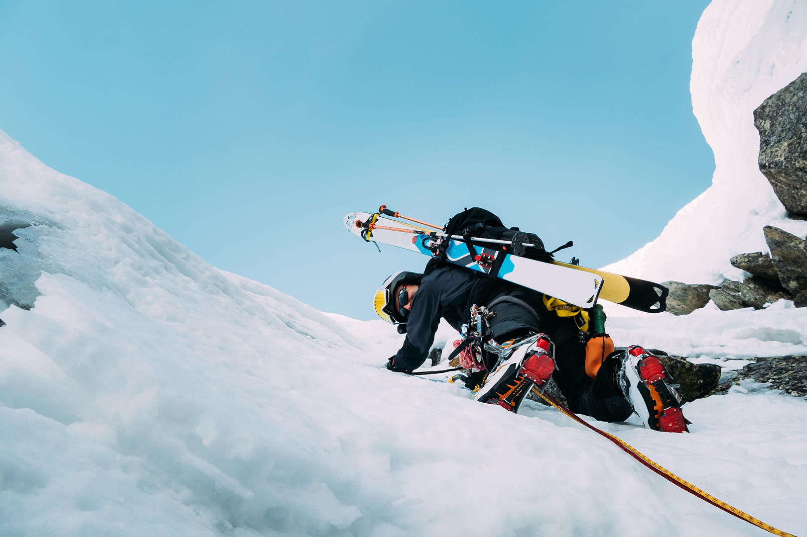
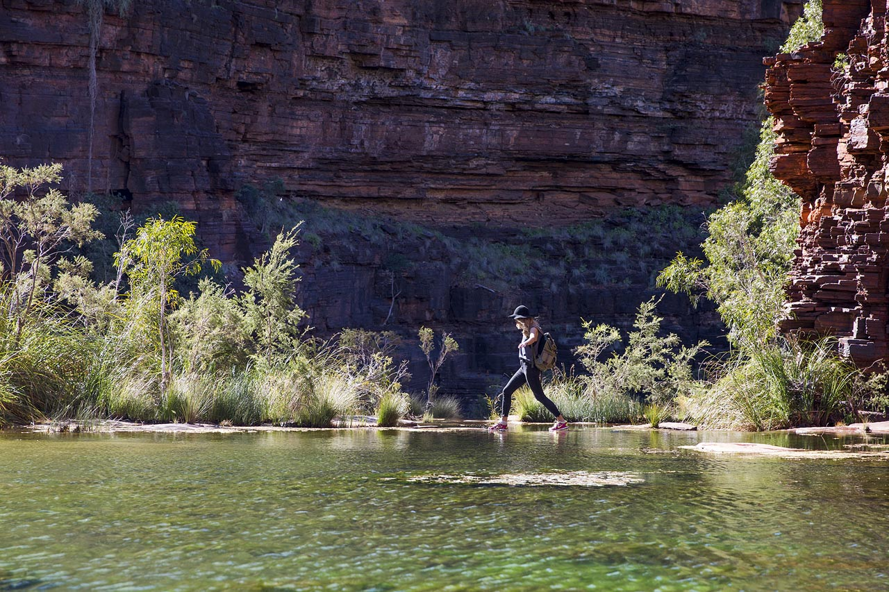
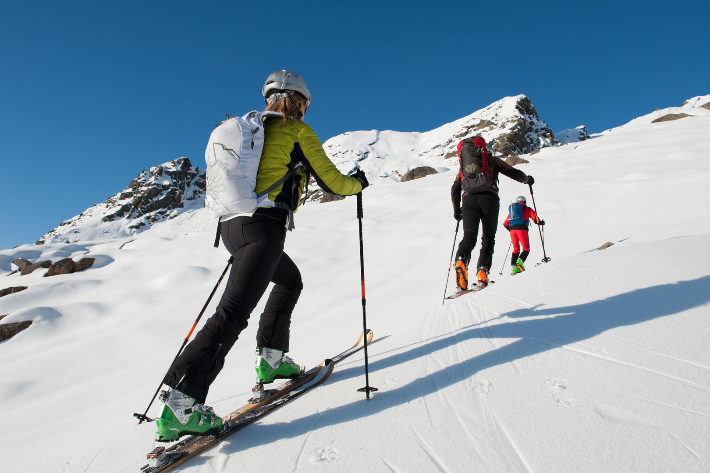
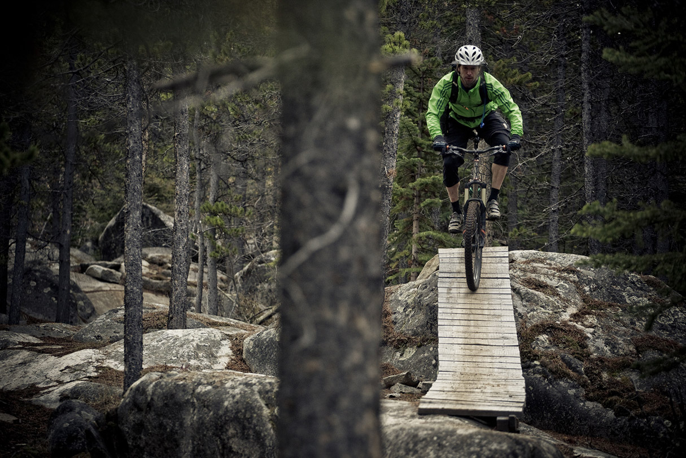
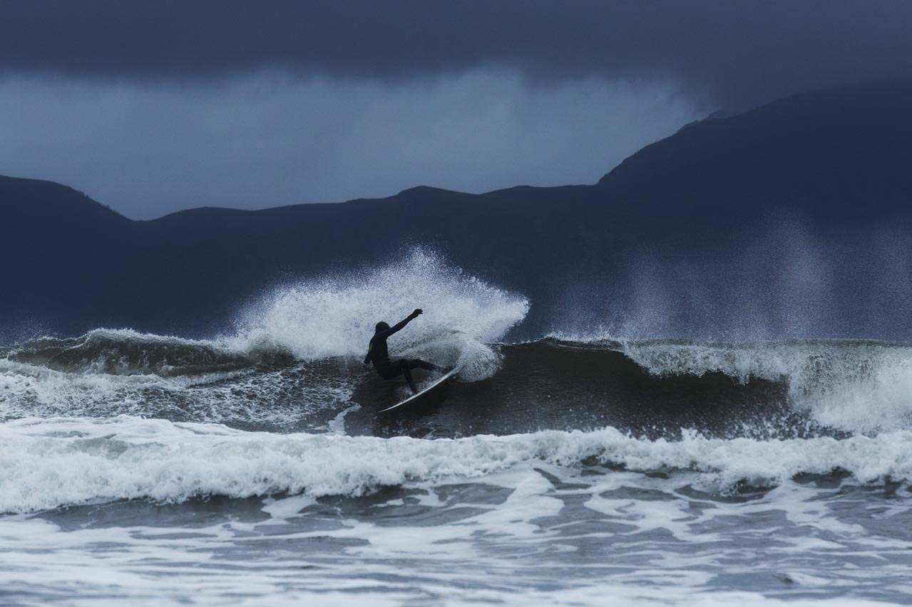

One story a month. Chosen by the editors. Written by you.
Not polished. Not perfect. True — and specific enough that only someone who was there could have written it.

Traversing the Rochefort Ridge: Two Days on Skis Above Chamonix
Alex C. from Brisbane had been planning the Rochefort Ridge for three seasons. A classic ski mountaineering traverse in the Mont Blanc massif — approached from the Helbronner cable car on the Italian side, moving across the high ridge above the Mer de Glace with glacier travel, mixed terrain, and the kind of exposure that narrows the whole world to the next placement. He sent us his account two weeks after returning and we read it in one sitting.
What makes Alex's story work is what he doesn't try to do: he doesn't inflate the difficulty or smooth over the navigational errors. There's a whiteout on day one, a bivy that wasn't quite planned, and a final descent into Chamonix that almost didn't happen. This is the kind of writing we look for.
How to Submit
Write your dispatch
A WKND dispatch is a first-person account of a specific route on specific dates. It should include: the full route name and location, the dates you travelled, your experience level and party size, the conditions you encountered (weather, snow, river levels — whatever was relevant), the gear you relied on, and an honest assessment of difficulty. Write about what happened, not what you planned. If the route went sideways, write about that. If you turned around, write about why. We're not interested in summary; we want the experience from the inside. 1,000–1,500 words is the target length.
Gather your evidence
Include at least one photograph — ideally several. They don't need to be professional; they need to be honest and, where possible, informative. Images showing the terrain, conditions, camp locations, and key decision points on the route are more useful than posed summit shots, though we'll take both. If you have a GPX track, include it — we'll use it to verify and supplement the route description. A gear list is strongly encouraged: brand, model, and a one-line note on performance. The more evidence you provide, the stronger your submission and the more useful it becomes for readers planning the same route.
Send it in
Email your submission to stories@wknd-adventures.com with the subject line formatted as: [SUBMISSION] Route Name, Location, Month Year. Attach photos as JPEGs (minimum 1800px on the long edge) and your GPX file if you have one. Paste your text in the body of the email — don't send a Google Doc link as your only copy. We review submissions monthly and respond to every one within six weeks, regardless of the outcome. If we decline, we'll tell you why. If we're interested but need revisions, we'll work with you on them.
From the Wild
Selected field dispatches from WKND contributors — and the routes inspiring the next round of reports.
Reader Dispatches
More from the community — routes completed, conditions encountered, lessons earned.

Six Days on the Larapinta Trail
Alice Springs in August. The Western Macdonnells in full dry-season form — ochre gorges, cold nights, and a water cache at Section 11 that wasn't where the map said it was. Marcus D.'s account of the first six sections, solo, with a 14 kg pack and a satellite communicator that earned its place on day three.

A Solo Ski Traverse of the Jura
Not the Alps. That was the point. Nina F. set out from Nyon in late January and spent five days crossing the Swiss Jura on touring skis — forest tracks, gentle ridgelines, and auberges that didn't expect anyone to arrive on skis. A dispatch about the quiet pleasure of going somewhere that isn't on anyone's list, and why that absence of expectations changes everything.


First 4000m Peak: Piz Bernina
The Biancograt is one of the great aesthetic ridges in the Alps — and a serious undertaking for a rope team completing their first 4000m objective. Sam T. from Edinburgh describes the preparation, the Tschierva Hut the night before, the two-hour wait at the bergschrund while another party sorted out a tangle, and the particular quality of standing on a summit that took two years to earn.


What the Lofoten taught our readers about commitment — and cold water.
When Morgan published the Lofoten Arctic surfing article in November, we weren't prepared for the response. Dozens of reader emails, three international surf trip inquiries, and more than a few people who said they'd already booked flights to Bodø. The lesson the article kept teaching — and that readers kept writing back about — was that surfing in the Arctic is not about toughness. It's about the right equipment, the right timing, and patience for the swell. The ocean has its own schedule.
What makes a great dispatch?
The dispatches we publish have one thing in common: they are specific. Not "the mountain was beautiful and the experience changed me" — but "the wind on the col was south-southeast at around 40 knots and we had to cross it crawling on hands and knees to avoid being blown off the ridge." That level of specificity is not just more interesting to read; it is genuinely useful to the next person planning the same route. The test we apply to every submission is this: does the reader who is planning this trip now know something useful that they didn't know before? If the answer is no, the piece isn't working yet.
Honest reporting of difficulty and failure is not optional — it's the whole point. We are not interested in sanitised accounts that smooth over the moments when things went wrong, the decision to turn around, the gear failure, the navigational error that cost three hours. Those are the moments that teach the most, and the best dispatches we've published have all contained at least one honest account of a mistake or a setback. Writing about failure requires more craft than writing about success, and we consider it the mark of a writer who has something real to say. If your route went perfectly according to plan, ask yourself whether you're telling the whole story.
We ask all contributors to respect the communities and ecosystems they pass through. This means: don't identify precise camp locations in sensitive areas where impact is already concentrated. Don't name access routes through private land without the landowner's knowledge. Don't publish coordinates for spots that are currently under pressure from overuse. We will edit for this where necessary and flag it during review, but the responsibility starts with the writer. If a place is worth writing about, it's worth protecting — and those two obligations sometimes pull in opposite directions. When they do, protection wins.
Photographs should be honest before they are beautiful. We don't expect professional equipment or post-processing skills. We do expect that images represent conditions accurately: if it was raining, we want to see the rain. If the route was loose and exposed, the photographs should show that. Heavily filtered images that make harsh terrain look inviting create a false impression that can put inexperienced readers in situations they weren't prepared for. Phone cameras in honest conditions beat DSLRs with misleading processing. Shoot what's actually there.
No promotional content, in any form. Mentions of gear you used and assessed honestly are fine — we encourage them. Mentions of gear you used because a brand sent it to you must be disclosed. Do not include links to brand websites, tour operators, or guiding companies in your submission text. Do not mention commercial services unless they are directly relevant to the route and you're prepared to assess them critically. If a mountain hut was overpriced and under-maintained, say so. If a local guiding company was excellent, say so — but also say what it cost and what you got. We'll remove any content that reads as unpaid advertising, with or without your knowledge that it reads that way.
Finally: write like yourself. The dispatches that land hardest are the ones where the writer's voice is present and distinct. Don't sand off the edges trying to sound like a magazine. Don't over-explain the emotional significance of what happened. Trust the specific detail to carry the meaning — it almost always does. The mountain doesn't need editorialising. Tell us what it looked like, what it felt like underfoot, what decision you made and why, and what you'd do differently. That's the whole brief.